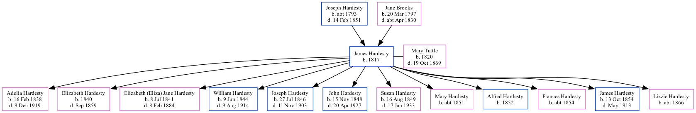

James Hardesty 1817 -
[ Home ] | [ Surnames Index ] | [ Family History ]The child of Joseph Hardesty and Jane Brooks, was born in Ohio, USA in 18171,2,3,4 and married Mary Tuttle (with whom he had 12 children: Adelia Adaline, Elizabeth Caroline, Elizabeth (Eliza) Jane, William Marion, Joseph Paul, John Colman, Susan Mariah, Mary J, Alfred S, Frances E, James Franklin and Lizzie P) in Fountain, Indiana, USA on Jun 10, 1839.
During his life, he was living in District 4, Scott, Iowa in 18501; in Louisa, Iowa in 18564; in Jasper, Fayette, Ohio in 18702; and in Highland, Muskingum, Ohio in 18803.
Parents
- Joseph Paul was born c. 1793
- Jane was born on Mar 20, 1797
Children
- Adelia Adaline was born on Feb 16, 1838
- Elizabeth Caroline was born in 1840
- Elizabeth (Eliza) Jane was born on Jul 8, 1841
- William Marion was born on Jun 9, 1844
- Joseph Paul was born on Jul 27, 1846
- John Colman was born on Nov 15, 1848
- Susan Mariah was born on Aug 16, 1849
- Mary J was born c. 1851
- Alfred S was born in 1852
- Frances E was born c. 1854
- James Franklin was born on Oct 13, 1854
- Lizzie P was born c. 1866
Citations
- 1850 United States Federal Census Ancestry.com Operations, Inc. (Age: 31)
- 1870 United States Federal Census Ancestry.com Operations, Inc. (Age in 1870: 53)
- 1880 United States Federal Census Ancestry.com Operations Inc (Age: 61; Marital Status: Married; Relation to Head of House: Self)
- Iowa, State Census Collection, 1836-1925 Ancestry.com Operations Inc (Marital Status: Married)
Family Tree
Data (GEDCOM) maintained by Jay Weston Hannah, Omaha, Nebraska, USA.
Website generated by ged2site. Last updated on Jun 18, 2024.